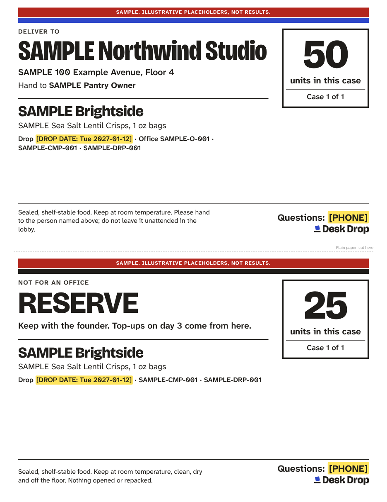

Case label: print spec
Template v1.0 · 2026-10-23 · file: templates/case-label/case-label.html

| Size | 8.5 x 5.5 in (half a Letter sheet), landscape. Two labels per sheet. |
|---|---|
| Stock | Half-sheet shipping labels in the Avery 5126 size (5-1/2 x 8-1/2 in, 2 per sheet; Avery template page, opened 2026-10-23), or any brand with the same layout. Or plain paper: cut on the dashed line and tape the label flat on the case with clear packing tape over all four edges. |
| Safe area | 0.4 in from every label edge. Home printers cannot print the outer 0.25 in or so. |
| Bleed | None. Nothing touches the edge. |
| Print settings | Paper Letter, Scale 100 (Actual size), Margins Default, Background graphics on. |
| Color | Ink on white. One cobalt band (office labels) or ink band (reserve labels). Prints fine in black and white. |
| Half-used sheet | Put {"_skip": true} as the first item in the JSON to start on the bottom label. |
| Where it goes | One label on the top of each case. If cases will be stacked, print a second copy for one side. Every case for an office gets its own label: "Case 1 of 2", "Case 2 of 2". |
Type sizes (minimums)
| Element | Face | Size | Why |
|---|---|---|---|
| Office name (or RESERVE) | Bricolage Grotesque ExtraBold | 26 to 48 pt | Readable across a lobby and when sorting cases on the floor. Narrows to 80% width before it shrinks. |
| Units in this case | Bricolage Grotesque ExtraBold | 64 pt | The count you check at the door. |
| Brand | Bricolage Grotesque ExtraBold | 24 pt | |
| Questions: [PHONE] | Atkinson Hyperlegible Next Bold | 15 pt | Front desks call this number. It comes from brand.json unless the label gives its own. |
| Address, hand-to line | Atkinson SemiBold / Regular | 13 to 14 pt | |
| Drop date and IDs | Atkinson SemiBold | 11 pt | Drop ID, campaign ID and office ID tie the case to the tracker. |
| Care line | Atkinson Regular | 10.5 pt | Fixed copy: sealed, shelf-stable, room temperature, hand to the named person, never left unattended in a lobby. |
Rules
- Count the units as you pack and write the count you packed, not the count you planned.
- Labels carry business details only: office, address, the pantry owner's name, brand, counts, IDs, the founder's business phone. No employee details.
- The reserve label stays with you. Reserve units are for day-3 top-ups and never stay at an office.